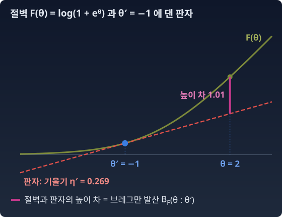

브레그만 발산: 접선이 만드는 높이 차
앞 절에서, θ와 η를 서로 다른 분포에서 가져오면 펜셸–영 부등식에 틈이 생긴다고 했다. 그 틈은 볼록한 곡선과 접선 사이의 높이 차다. 한편 분포 사이의 차이를 재는 비대칭의 양으로 우리는 KL 발산을 알고 있다. 둘은 혹시 같은 것 아닐까?
절벽 위의 판자 — 왜 비대칭인가
볼록한 절벽 위 한 지점에 서서, 그 지점의 기울기대로 곧은 판자를 쭉 뻗는다. 판자는 어디서나 실제 절벽보다 아래에 있다(볼록하니까). 내 발밑에서 판자와 절벽의 높이 차는 0이고, 멀어질수록 커진다. 이 "절벽과 판자 사이의 높이 차"가 브레그만 발산이다. 판자를 어디에 댔느냐에 따라 값이 다르다. 그래서 비대칭이다.

이 높이 차를 계산 도구로 처음 쓴 사람은 소련의 수학자 레프 브레그만(Lev Bregman)이다. 1967년 그는 여러 볼록 집합이 함께 가진 점, 곧 제약 여러 개를 한꺼번에 만족하는 점을 찾는 방법을 다뤘다. 이미 쓰이던 방법은 집합마다 돌아가며 가장 가까운 점으로 수선을 내려 옮겨 가는 것이었는데, 여기서 「가깝다」는 보통의 거리로만 쟀다. 브레그만은 가까움을 볼록함수 하나로 만든 이 높이 차로 재도 같은 방법이 통하도록 넓혔다. 대칭이 아니어서 거리라 부르기는 어렵지만, 번갈아 사영하는 데는 충분했다.
KL = 브레그만 발산
KL을 지수족 골격으로 풀면 이 모양이 그대로 나온다. log pθ₁ − log pθ₂ = (θ₁ − θ₂)·t(x) − F(θ₁) + F(θ₂) 이고(캐리어는 상쇄된다), pθ₁ 아래에서 평균 내면 t(x) 자리에 η₁이 들어간다.
앞 칸과 뒤 칸의 순서에 주의하라. KL(pθ₁ ‖ pθ₂) 에서 판자는 앞의 분포 θ₁ 에 대고, 높이 차는 뒤의 θ₂ 에서 잰다. θ 좌표로는 BF(θ₂ : θ₁), 순서가 뒤집힌다. η 좌표로 쓰면 BF*(η₁ : η₂), 순서가 그대로다. 헷갈리면 숫자로 확인한다: θ₁ = 0.5, θ₂ = −1 인 두 베르누이에서 KL(p₁‖p₂) = 0.2729, KL(p₂‖p₁) = 0.2574 이다. BF(θ₂ : θ₁) = 0.2729, BF(θ₁ : θ₂) = 0.2574. 순서를 거꾸로 쓰면 다른 방향의 KL이 나온다.
불러오는 중…
ML에서: 고정된 판자와 움직이는 모형
학습은 교차엔트로피를, 곧 KL(현실 ‖ 모형)을 줄이는 과정이다. 현실이 가족의 한 명 pθ* 이고 모형이 qθ 라면, 판자는 현실 θ* 에 고정되어 있다. 학습은 모형의 θ를 옮겨, 그 고정된 판자와 곡선 사이의 높이 차 BF(θ : θ*) 를 줄여 가는 일이다.
파이썬
import numpy as np
F = lambda t: np.log1p(np.exp(t)) # 베르누이의 로그정규화자
dF = lambda t: 1 / (1 + np.exp(-t)) # η = 시그모이드(θ)
B = lambda a, b: F(a) - F(b) - dF(b) * (a - b) # B_F(a : b), 판자는 b 에
kl = lambda p, q: p * np.log(p / q) + (1 - p) * np.log((1 - p) / (1 - q))
Fs = lambda e: e * np.log(e) + (1 - e) * np.log(1 - e)
BFs = lambda e1, e2: Fs(e1) - Fs(e2) - np.log(e2 / (1 - e2)) * (e1 - e2) # ∇F*(η) = θ
t1, t2 = 0.5, -1.0
p1, p2 = dF(t1), dF(t2)
print(f"KL(p1‖p2) = {kl(p1, p2):.4f} B_F(θ2:θ1) = {B(t2, t1):.4f} B_F*(η1:η2) = {BFs(p1, p2):.4f}")
print(f"KL(p2‖p1) = {kl(p2, p1):.4f} B_F(θ1:θ2) = {B(t1, t2):.4f}")
for t in [0.0, 5.0]:
print(f"θ = {t}: θ 를 0.1 옮긴 KL = {kl(dF(t), dF(t + 0.1)):.3e} F''(θ) = {dF(t) * (1 - dF(t)):.4f}")
# KL(p1‖p2) = 0.2729 B_F(θ2:θ1) = 0.2729 B_F*(η1:η2) = 0.2729
# KL(p2‖p1) = 0.2574 B_F(θ1:θ2) = 0.2574
# θ = 0.0: θ 를 0.1 옮긴 KL = 1.249e-03 F''(θ) = 0.2500
# θ = 5.0: θ 를 0.1 옮긴 KL = 3.217e-05 F''(θ) = 0.0066
한 걸음 더 — θ의 한 칸은 곳곳에서 크기가 다르다
θ를 0.1만큼 바꾸는 것이 어디서나 같은 크기의 변화를 만드는가? 방금 파이썬 출력이 답한다. 베르누이에서 θ = 0 의 한 걸음은 KL 1.25 × 10⁻³ 인데, θ = 5 의 한 걸음은 3.2 × 10⁻⁵ 이다. 약 39배 차이다. F를 두 번 미분한 값 F″(θ)가 곳곳에서 다르기 때문이다. 그렇다면 θ 좌표의 한 칸은 곳곳에서 다른 크기의 변화다.
수확
“KL 발산은 '로그정규화자와 그 접선 사이의 높이 차’였다. KL 발산의 비대칭, 볼록함수의 접선과 르장드르 변환, 지수족의 θ 좌표 — 세 갈래가 여기서 하나로 합류한다.”
문제 14. 오늘의 속도로 10년 뒤를 어림하면
연 5% 복리 적금에 1,000만 원을 넣었다. n년 뒤 잔고는 1000 × 1.05ⁿ 만 원이고, 이 곡선은 볼록하다. (가) 지금 잔고가 늘어나는 속도(한 해에 약 48.8만 원)로 곧게 10년을 늘여 어림하면 실제 잔고보다 얼마나 모자라는가? (나) 거꾸로, 10년 뒤 잔고가 늘어나는 속도로 곧게 지금까지 되짚어 어림하면 실제 1,000만 원보다 얼마나 모자라는가? 두 값은 같은가?
함께 풀기

(가)는 1000 + 48.8 × 10 = 1488만 원, 실제는 1628.9만 원이라 141만 원 모자라요. (나)도 같은 10년이니까 똑같이 141만 원 모자라겠죠.

10년 뒤에는 한 해에 얼마씩 늘고 있어요?

1628.9 × 0.0488 = 79.5만 원이요. 그 속도로 10년을 되짚으면 1628.9 − 795 = 834만 원이라 166만 원 모자라요. 141이 아니네요.

곡선이 뒤로 갈수록 가팔라지니까, 가파른 쪽에서 댄 자가 더 크게 빗나가. 곡선이 볼록하니까 어느 쪽에 대든 자는 곡선 아래에 있어서 모자라기만 하고.
위의 판자 이야기로 말하면요?
판자를 지금에 대고 10년 뒤에서 높이 차를 잰 게 (가), 판자를 10년 뒤에 대고 지금에서 잰 게 (나)예요. 같은 두 점인데 141 대 166. 판자를 어디에 대느냐에 따라 값이 다른 비대칭이 이거예요.
문제 15. 푸아송에서 판자는 어디에 대나 (킬러)
(가) 지수족에서 KL(pθ₁ ‖ pθ₂) = BF*(η₁ : η₂) 를 증명하라. KL = BF(θ₂ : θ₁) 은 위에서 보인 것을 써도 된다. (나) λ₁ = 2, λ₂ = 5 인 두 푸아송에서 KL의 두 방향, BF(θ₂ : θ₁), BF*(η₁ : η₂)를 수치로 구해 맞춰 보라. 푸아송은 F(θ) = eᶿ, η = λ 다.
함께 풀기

수치부터 했어요. KL(p₁‖p₂) = 2 log(2/5) + 5 − 2 = 1.167, 반대 방향은 1.581 이에요. BF(θ₂ : θ₁) = exp(θ₂) − exp(θ₁) − exp(θ₁)(θ₂ − θ₁) = 5 − 2 − 2 log 2.5 = 1.167. 여기까진 맞아요. 그런데 BF*(η₁ : η₂)는 0.186 이 나와요. 1.167 과 여섯 배 넘게 차이 나요. 수치 오차일까요?
그 코드는 몇 자리까지 정확해요?
로그랑 지수 몇 번이니까 10⁻¹⁵ 쯤이요. 여섯 배는… 수치 오차가 아니에요. 식이 틀렸어요.
F*는 어디서 가져왔어요?
F*는 음의 엔트로피라고 했으니까, 푸아송 확률로 −H를 x = 0부터 199까지 직접 더해 만들었어요.

그건 캐리어가 0일 때만이야. 푸아송은 캐리어 −log x! 가 있어서 F*(η) = −H − E[k(x)] 이고, F(θ) = eᶿ 를 손으로 르장드르 변환하면 η log η − η 야. 그걸로 해 봐.
(2 log 2 − 2) − (5 log 5 − 5) − log 5 × (2 − 5) = 1.167. 세 개가 같아요. −H로 만든 함수에는 E[log x!] 라는 굽은 몫이 더 섞여서, 판자와의 높이 차가 달라졌던 거예요.
서연 학생, 증명은요?
첫 번째 등호는 위에서 본 대로 판자가 θ₁에 있는 BF(θ₂ : θ₁)이에요.

두 번째가 막혀요. BF*(η₁ : η₂) = F*(η₁) − F*(η₂) − ∇F*(η₂)·(η₁ − η₂) 인데, ∇F*(η₂) 를 뭘로 바꿔야 할지 모르겠어요. F* 는 엔트로피에 캐리어 몫을 더한 거니까 그걸 η로 미분해야 하나요?
앞 절에서 르장드르 짝의 기울기의 역함수에 대해 뭐라고 했죠?
(F′)⁻¹ = (F*)′ … θ 에서의 기울기가 η 면, η 에서의 F* 의 기울기는 θ 예요.

그러면 ∇F*(η₂) = θ₂ 예요. 엔트로피를 미분할 필요가 없었어요. F*(η) = θ·η − F(θ) 도 넣으면 θ₁·η₁ − F(θ₁) − θ₂·η₂ + F(θ₂) − θ₂·(η₁ − η₂) = F(θ₂) − F(θ₁) − η₁·(θ₂ − θ₁). 첫 번째 줄이랑 똑같아요. θ 좌표에서는 판자를 θ₁ 에 대고 θ₂ 에서 재는데, η 좌표에서는 판자를 η₂ 에 대고 η₁ 에서 재요. 좌표를 바꾸면 앞 칸과 뒤 칸이 뒤집혀요.

이 장에서 가져갈 건 이거예요. KL 은 로그정규화자의 접선 높이 차이고, θ 로 쓰면 순서가 뒤집히고 η 로 쓰면 그대로예요. 그 사이를 잇는 게 르장드르 짝의 한 줄, 기울기의 역함수는 쌍대의 기울기라는 사실이었어요.
선형대수에서 전치행렬로 옮기면 곱의 순서가 뒤집히던 것 같아요. (AB)ᵀ = BᵀAᵀ. 쌍대로 건너가면 순서가 뒤집히는 게 규칙처럼 느껴져요.
문제 16. 확신한 예제는 왜 잘 움직이지 않나
로짓 하나로 앞면 확률을 내는 이진 분류 모델이 있다. 위 파이썬 출력에서 로짓을 0.1 옮기면 로짓 0 근처에서는 KL이 1.25 × 10⁻³, 로짓 5 근처에서는 3.2 × 10⁻⁵ 로, 약 39배 차이가 났다. (가) 로짓 5 에서 KL 1.25 × 10⁻³ 을 만들려면 로짓을 얼마나 옮겨야 하는가? (나) 그때 앞면 확률은 얼마나 바뀌는가? 로짓 0 에서 0.1 옮길 때와 견줘라.
함께 풀기
39배 차이니까 0.1 × 39 = 3.9 만큼 옮기면 돼요.
걸음이 작을 때 KL은 걸음 크기의 몇 제곱에 비례하죠?

브레그만 발산은 곡선과 판자의 높이 차니까… 작은 걸음 δ(델타)에서는 ½ F″ δ², 제곱이에요. 그럼 39배를 채우는 걸음은 √39 ≈ 6.2배, 0.1 × 6.2 = 0.62 쯤이요.
정확히 풀면 로짓을 올릴 때 0.682, 내릴 때 0.557 이야. 곡선이 한쪽으로 기울어 있어서 방향마다 조금 달라. 제곱으로 어림한 0.62 는 그 사이고.
(나)는요?
로짓 0 에서 0.1 옮기면 확률이 0.500 에서 0.525 로 0.025 바뀌어요. 로짓 5 에서 0.682 옮기면 0.9933 에서 0.9966 으로 0.0033 바뀌고요. KL은 같은데 확률 변화는 일곱 분의 일도 안 돼요.

확률이 1 에 붙어 있을수록 작은 변화도 KL로는 크게 쳐지는 거네요. 거꾸로 말하면, 모델이 이미 0.993 으로 확신한 예제는 같은 크기의 로짓 걸음으로는 분포가 거의 안 움직여요.
그래요. θ 좌표의 한 칸이 곳곳에서 다른 크기라서, 학습률 하나로는 모든 곳의 걸음을 고르게 맞출 수 없어요. 곳마다 자를 달리 대야 하지 않을까 하는 물음이 여기서 남아요.